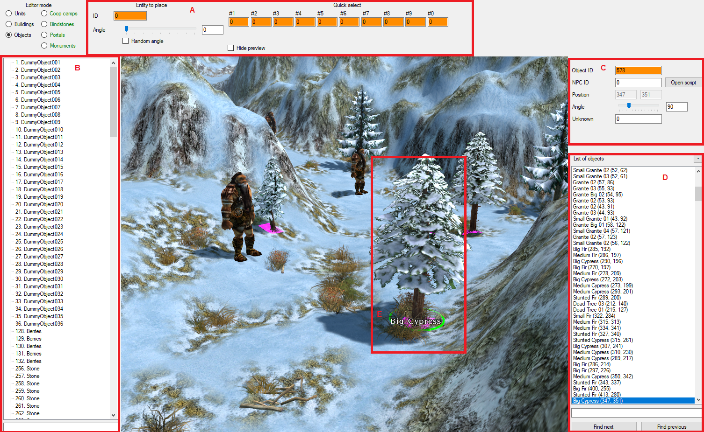
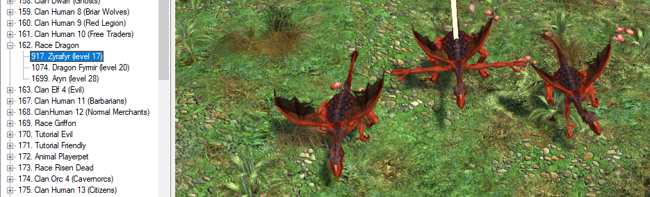
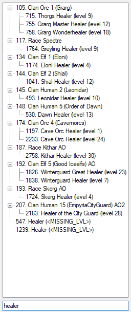
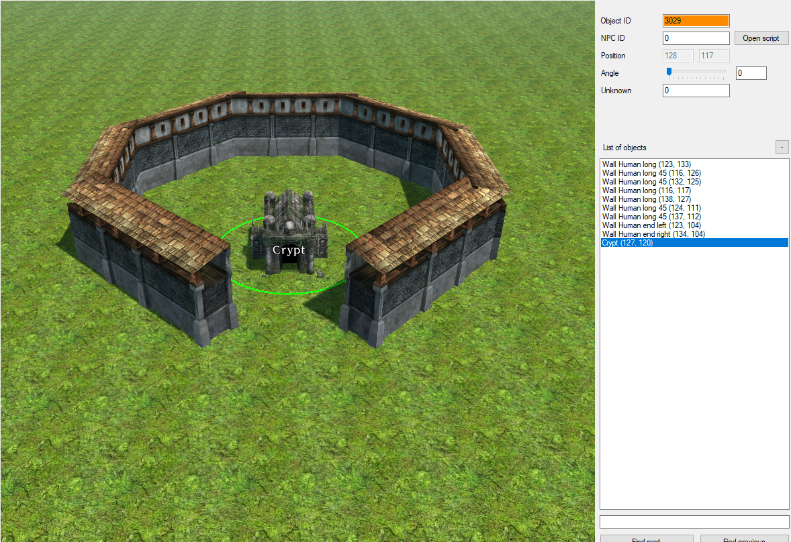
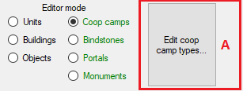
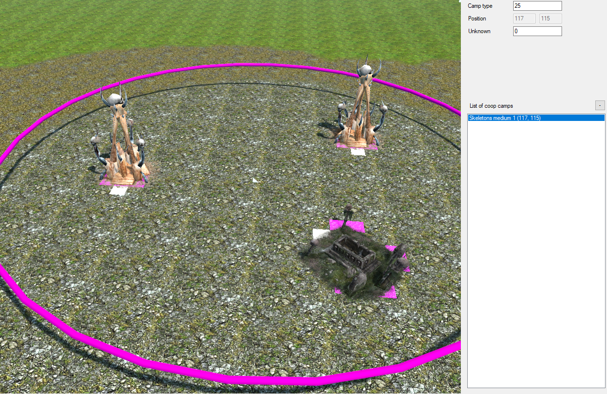
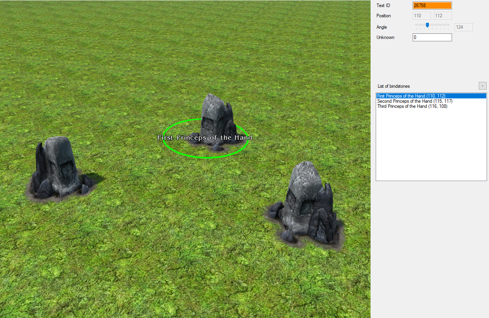
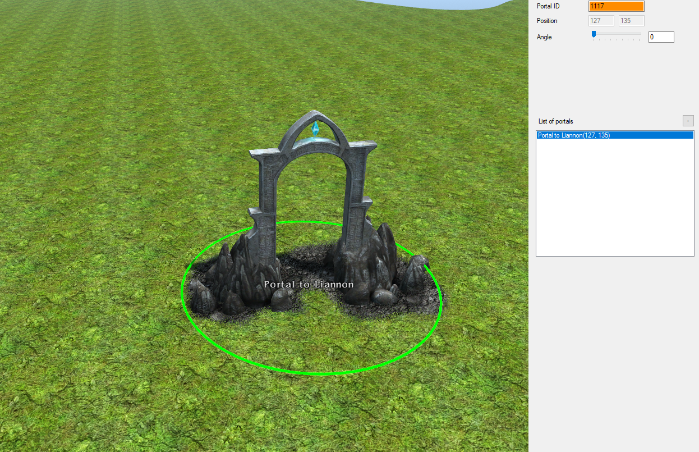
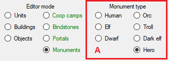
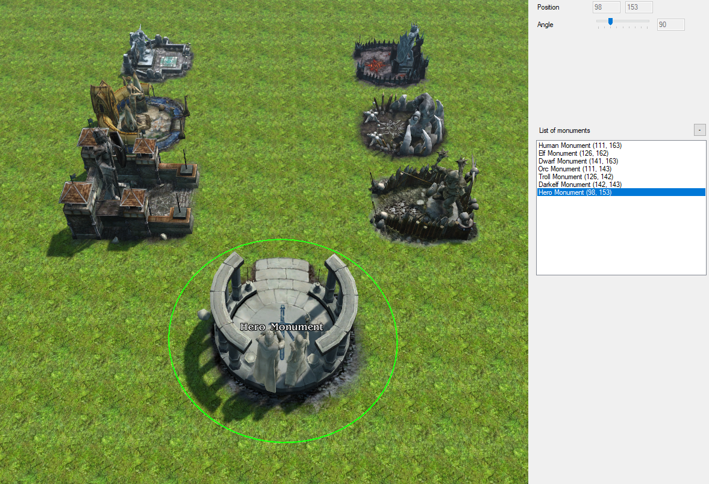

Every map is home to entities. Entity is any map element which can be somehow interacted with in the game. There are 7 types of entites, each of which has its own user interface in the editor, however they do share some things.
Every entity mode has the option to show/hide entity preview at the 3D cursor. When unchecked, a preview of the selected entity type follows the 3D cursor.
Unit, object, and building entity modes can specify entity ID manually in the ID field.
These three modes also have access to quick select. When you select an entity type, you can press Ctrl+(1, 2, ...) to assign the ID to a quick select slot. You can press (1, 2, ...) to select entity type associated with the ID in the given quick select slot. These quick select slots are unique for each of the entity modes.
Unit, object and building entity modes have a type selection panel, which contains groups of entity types. Unit and building entity types are grouped by race, object entity types are grouped by the object resource path (see category 34. in gamedata).
Under the list of entity types there's a search tool. You can find all entity types by name or by group name by typing the name (or a part of it) there.
Every entity mode has different properties, and will be explained in respective entity mode description.
Entity list contains all entities on the map, respective to the entity mode. Selecting an entity from the list will move camera to view the entity.
Additionally, in unit, object, and building entity modes, you can search for entities by name using the controls below the list.
In a given entity mode, you can select entities respective to that mode. Click on them with left mouse button to select the entity. Clicking on them with right mouse button will remove the entity (
A. Placement angle - you can specify initial angle the new objects will be placed at. Checking Random angle will set initial angle for new objects at random.
Coop camps are used only for maps of type COOP. See Map Editor - Metadata mode.
A. Edit coop camp types... - you can view available coop camp types and edit them using this option. See SQL Modifier - GdRtsCoopSpawnGroup.lua.
Bindstones are used as spawn points for players. You can't remove a bindstone as long as the player that is assigned to it is a member of any team in any team composition (see Map Editor - Metadata mode).
Portals are links between different maps in campaign mode. In free game mode, a special Portal to Return is usually placed.
Monuments are objects that can be activated by player to summon workers and fighters at his command. Hero monument is the place where you summon your runic heroes.
A. Monument type - to place a monument of given type, you must first select its type in this panel.
Here is a short description on how to assign NPC IDs to entities and how to open NPC scripts.
Every unit, building and object can be assigned NPC ID. This ID is unique per map.
Every map is assigned to a unique platform, its ID can be found in category 39. Map data in GameData Editor If a map is not assigned to any platform, an implicit platform ID 6666 is used.
Every platform script is located in folder C:/SpellForce/script/pXXXX/, where XXXX is platform ID. In this folder, you can find, among other scripts, numerous files named n####.lua, where #### is NPC ID.
You can open NPC scripts using Open script button in Entity Properties panel. If this NPC ID doesn't exist on the map, this button will create one for this entity, in respective platform folder.